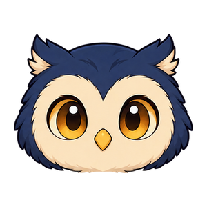

Opening animation preview

Owllowance
Budget & Expense Tracker
Opening preview…
Ready
The app would show Home here.
This is an animation demo. “Finish loading demo” represents essential startup becoming ready and exits immediately. No account, database or financial records are loaded. Uses a system font; Inter is not bundled.